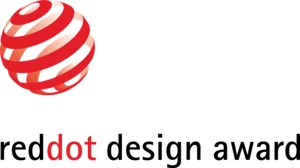
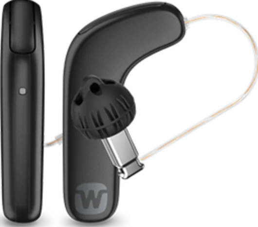

Som com naturalidade
A tecnologia PureSound™ utiliza o processamento ZeroDelay™ para ajudar a reduzir a sensação de som artificial em configurações compatíveis.
OPIMED + WIDEX
Descubra uma experiência auditiva pensada para preservar a naturalidade dos sons. Tecnologia dinamarquesa, design refinado e orientação especializada da Opimed para encontrar o Widex ideal para você.
Sinta a diferença
Uma conversa especial. A música que emociona. Os pequenos sons que fazem parte de cada dia. A filosofia da Widex parte de algo essencial: preservar as nuances da vida por meio de uma experiência sonora mais natural.
Há décadas, a marca desenvolve tecnologia auditiva para aproximar você do que realmente importa, sem abrir mão da sofisticação e da personalização.
A assinatura Widex
Na Widex, inovação significa criar tecnologias que respeitam a forma como percebemos o mundo. Clareza, naturalidade e ajustes pessoais fazem parte dessa experiência, conforme o modelo e a indicação auditiva.
A tecnologia PureSound™ utiliza o processamento ZeroDelay™ para ajudar a reduzir a sensação de som artificial em configurações compatíveis.
Recursos de processamento da fala e gerenciamento de ruídos ajudam a destacar conversas sem desconectar você do ambiente.
Formatos discretos, recursos digitais e opções de personalização permitem adaptar a experiência às necessidades individuais.
Tecnologia para a vida real
Avançado na tecnologia.
Simples no dia a dia.
Conheça recursos pensados para acompanhar sua rotina, com orientação da Opimed para aprender a usar o seu aparelho com confiança.
Widex no mundo
Fundada na Dinamarca em 1956, a Widex está presente em mais de 80 países e é reconhecida com prêmios internacionais de design e inovação. Na Opimed, você conhece essa tecnologia com orientação especializada.

Aparelhos auditivos Widex
Os modelos variam em formato, recursos e forma de uso. Conheça algumas opções para entender melhor essas diferenças antes da avaliação.
Uma das linhas mais recentes da Widex, desenvolvida com foco em uma experiência sonora mais natural.

Modelo receptor-no-canal para quem procura uma opção para o uso diário e quer considerar recursos de conectividade.
Red Dot Design Award e Hearing Technology Innovator Award 2024
Agendar avaliação gratuitaOs modelos variam em tamanho, formato e recursos. Na avaliação gratuita, a equipe Opimed considera sua necessidade auditiva, sua rotina e suas preferências para orientar a escolha.
Disponibilidade dos modelos e indicação devem ser confirmadas durante o atendimento.
Avaliação gratuita
Conhecer a Widex é o começo. Na Opimed, você encontra orientação profissional para entender as soluções disponíveis, suas características e o que faz sentido para a sua audição.
Vídeo oficial Widex Allure
Atendimento na prática
Dúvidas sobre aparelhos Widex
A Opimed comercializa aparelhos auditivos Widex e possui unidades em diferentes cidades. Você também pode iniciar o atendimento por esta página.
A indicação depende da sua necessidade auditiva, do formato que você prefere e da sua rotina. Na avaliação gratuita, a equipe Opimed orienta você na escolha do modelo mais adequado.
Sim. A linha apresentada pela Opimed inclui opções intracanais, microcanais e receptor-no-canal.
Sim. Alguns modelos oferecem conectividade com dispositivos iOS e Android. A compatibilidade deve ser conferida de acordo com o aparelho escolhido.
O valor depende do modelo e da configuração indicada. A equipe Opimed apresenta os preços e condições disponíveis durante o atendimento.
Agende sua avaliação
Conte para nós o que você espera da sua experiência auditiva. Juntos, vamos buscar a solução mais adequada às suas necessidades.
Fale com a Opimed
Conte para a equipe o que você procura e tire suas dúvidas pelo WhatsApp.